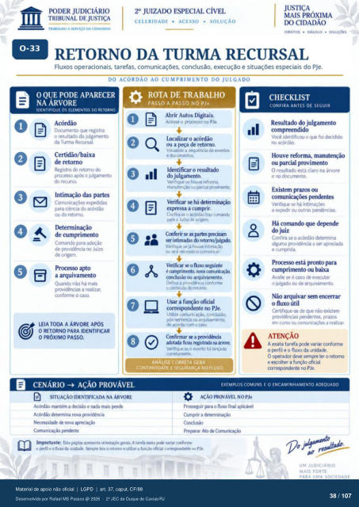

Transcrição automática em português, ainda não revisada. Confira grafia, prazos e termos jurídicos na imagem e no PDF antes de utilizar.
O QUE PODE APARECER
NA ÁRVORE
IDENTIFIQUE OS ELEMENTOS DO RETORNO
Acórdão Dcxumento que registra
0 resultado do julgarnento da Turma Recursal.
Certidão/baixa de retorno
Registro do retorno prcxesso avós o julgamento
do recurso. Intimação das partes
expedidas para ciéncia do
ou do retorno. de cumprimento
Comando para de providência no Juízo
de origem. a arquivamento
Quando não há mais providências a realizar.
conforme o caso. LEIA TODA A ÁRVORE Após
O RETORNO PARA IDENTIFICAR
O PRÓXIMO PASSO.
B CENÁRIO • AÇÃO PROVÁVEL
SITUAÇÃO IDENTIFICADA NA ÁRVORE
Acórdão mantém a e mais Acór&) &termina vovüiérwia
N«essd" rwva
TRABALHO A SERVIÇO DA CIDADANIA
O III
CELERIDADE • ACESSO • SOLUÇÃO
IX) CIDADÃO
DIREITOS • DIALC-GO • SOLUÇÕES
RETORNO DA TURMA RECURSAL
Fluxos operacionais, tarefas, comunicações. conclusão, execução e situações especiais do PJe.
DO ACORDÃO AO CUMPRIMENTO DO JULGADO
ROTA DE TRABALHO
PASSO A PASSO NO PJe
Abrir Autos Digitais. Acesse 0 prcxesso no PJe.
Ltxalizar o acórdão ou a F•ça de retorno.
Vrsuahze a sequência de eventos e dcxumentos.
Identificar o resultado julgamento.
Verifique se houve reforrna. manutençào Ou parcial
Verificar se há &tertnüi$) expressa a cumprir.
Confira se o acórdáo traz para o Juizo de ar igern.
Confeú partes pre&zn intimadas retcrno/julgah
Venfque se hmr.•e int.maçáo e n«essáro cMnunzar.
Verificar 0 fh1X0 é nova
conclusão ou arquivamento. Defina a provdénci.a cmforrrr
o cmteúdo do retorrxy a função oficial
correspondente no PJe. Utilize conclusão.
rós•sertenca ou arquivamento. de acorck' corn o caso
Confirmar a provid&ida ficou registruia ru
Verifique se o evento foi cctretarnente.
O
ANALISE CORREIA GERA
CONTINUIDADE E SEGURANÇA NO FLUXO.
CHECKLIST
CONFIRA ANTES DE SEGUIR
Resultado julgamento compreendido
Vcxé identif.cmJ o que foi acórdão.
Houve reforma, manutenção ou parcial provimento
O resultado está claro na árvore e dcxurnento.
Existem prazos ou Verifique se há
a exÇ*dir Ou outras Há comando que deFnde
do juiz Confira se 0 &termina
algurna providér•cia a Se aprKiuIa e cumprida.
Prt:xe• está pronto para cumprimento ou baixa
Avalie se é caso de exKutar 0 julgado de arquivanrnto,
Não arquivar sem o fluxo útil
Certifique-se de que não existem providéncias mdentes. prazos
ern curso a realizar
ATENÇÃO
A exata tarefa mxie variar conforme 0 perfil e o fluxo da unidack.
O ovvador deve sernpre ler 0 retom e escolher a função (frial
correspondente no PJe.
EXEMPLOS COMUNS E O ENCAMINHAMENTO ADEQUADO
AÇÃO PROVÁVEL NO PJe
Prosseguir pra 0 fluxo final aplkável Cunprir a ckterminaçü)
Ato Cornunkaçáo Esta çúgina apresenta wraÁ. A tareú variar cMfMrne
o F'ftl e o fluxo unidade. kia o Morno e a funçào oficial corresxnimte Pk.
UM JUDICIÁRIO
MAIS FORTE
Ver também o infográfico original (página 38)
